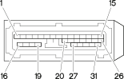

M050 ABS control unit ( ABS )
- Path
- Electrical equipment > 3 Connectors > M Intermittent and timed electronic devices,.. > M50 ABS control unit > M050 ABS control unit ( ABS )
- Kind
- connector pinout (pin -> wire colour -> other end)
- Applies to
- all engines; all production periods
- Interactive page
- https://sloeber94.github.io/elrnDB-fMltpl/en/#/2890829
Applies to: all engines; all production periods

Wiring | Colour |
|---|---|
NERO (black) |